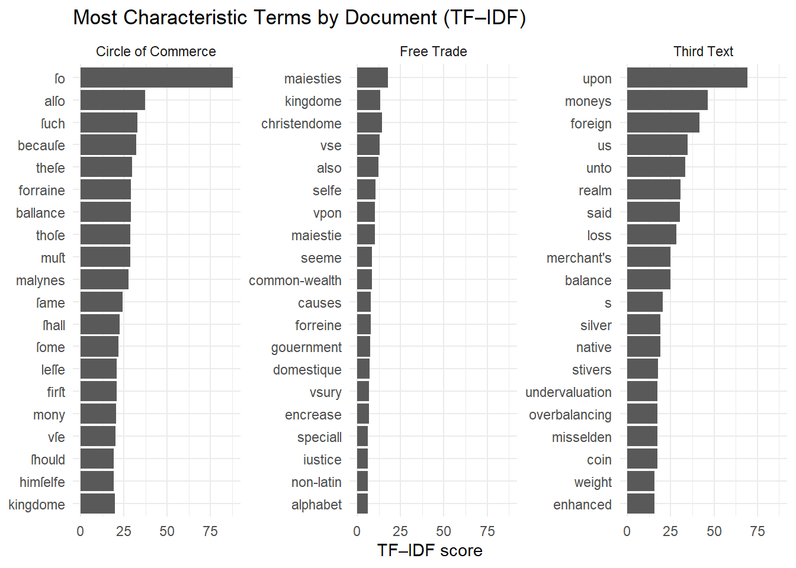

library(tibble)
library(dplyr)
library(readr)
library(ggplot2)
library(quanteda)
library(quanteda.textstats)
txt_circle <- read_file("texts/A07594__Circle_of_Commerce.txt")
txt_free <- read_file("texts/B14801__Free_Trade.txt")
txt_third <- read_file("texts/A06785.txt")
texts <- c(
"Circle_of_Commerce" = txt_circle,
"Free_Trade" = txt_free,
"Third_Text_A06785" = txt_third
)
corp <- corpus(texts)Week 04: Text Representation (1)
Document-Feature Matrices
In Week 3, we began to compare two of Misselden’s documents through sentiment analysis around trade terminology. In class on Wednesday, we discussed measures of similarity between texts and what a Document-Feature Matrix (DFM) looks like. Let’s implement what we learned in class by comparing the two Misselden’s texts to “mystery” text A06785.txt.
To create a DFM of the three texts, we will use the quanteda package. We start by loading the packages, reading the texts, and combining into a quanteda corpus named corp.
We then tokenize and do some basic cleaning (most of this should be very familiar by now):
toks <- tokens(
corp,
remove_punct = TRUE,
remove_numbers = TRUE,
remove_symbols = TRUE
)
toks <- tokens_tolower(toks)
custom_stop <- c(
"vnto","haue","doo","hath","bee","ye","thee","hee","shall","hast","doe",
"beene","thereof","thus"
)
toks <- tokens_remove(toks, pattern = c(stopwords("en"), custom_stop))The choices that we made when tokenizing do matter! Note that I doing the following:
I am removing punctuation. With this decision, I am asserting that for this analysis, punctuation doesn’t matter (so I want to treat “commerce.” = “commerce!” = “commerce”). You may disagree! If were were doing an analysis of style, then punctuation would matter a lot.
I am removing numbers. Since these are mercantile texts (including the “mystery” one), it may seems weird to remove potential economic data. My choice is based on a concern for distracting or inaccurate numbers (such as pagination or rounded guesses about population and trade estimates). Again, you may disagree and want to keep them (that’s an easy fix in the code above).
I am removing symbols. This goes hand-in-hand with the choice about numbers. Most symbols are going to be transcription/OCR errors. The only (likely) valuable ones are currency markers. Since I opted to remove numbers, I decided to remove symbols.
As I have taken pains to demonstrate, these are all decisions that you can change. But you have to have a principled reason to do so!
Now we can build the DFM using quanteda’s dfm() and inspect it to make sure that it looks reasonable:
# Document-feature matrix (DFM)
dfm_mat <- dfm(toks)
# Inspect by raw count (in our corpus) the top 25 features
dfm_matDocument-feature matrix of: 3 documents, 9,083 features (56.93% sparse) and 0 docvars.
features
docs circle commerce prooeme herodotvs clio reportes croesvs
Circle_of_Commerce 14 25 1 1 2 1 1
Free_Trade 1 22 0 0 0 0 0
Third_Text_A06785 41 31 0 0 0 0 0
features
docs king lydia ſonne
Circle_of_Commerce 35 1 5
Free_Trade 53 0 0
Third_Text_A06785 36 0 0
[ reached max_nfeat ... 9,073 more features ]topfeatures(dfm_mat, 25) trade exchange commodities money merchants may
602 478 293 290 282 272
one moneys great kingdome now made
268 267 214 188 187 186
said ſo much p malynes cloth
186 184 183 170 162 162
value without time price upon man
150 148 147 146 145 142
whereby
133 OK, so far so good. This is a sparse matrix and the top features seem quite plausible. We could also use this as a way to (potentially) remove some more stop words (I am not sure that “one” or “now” are giving us much information). I am going to keep things as they are. In the aggregate, stopwords won’t be a problem for what we are doing today (this is an empirical statement based on experience; I present no evidence for this here), and we are going to have a better way to get rid of overly common terms in the next section.
- For your entertainment: try playing around with stopwords and difference choices in the tokenization step.
To compare the documents, we are going to use the second new library we introduced today: quanteda.textstats. It will gives us a number of ways to compare our three texts. We are going to try two of them and compare the results.
First:
Let’s start with a correlation measure. We are going to treat each document as a word frequency vector. So, if we have N words in our corpus, each document is represented by an N-dimensional vector based on the frequency of each word within that text. The vectors are simply the rows of the DFM (where each row is a document).
What we are going to measure in this step is the pairwise Pearson correlation between the vectors across all the word features (the columns of the DFM).
# correlation similarity
sim_cor <- textstat_simil(
dfm_mat,
method = "correlation",
margin = "documents"
)
sim_cortextstat_simil object; method = "correlation"
Circle_of_Commerce Free_Trade Third_Text_A06785
Circle_of_Commerce 1.000 0.569 0.505
Free_Trade 0.569 1.000 0.441
Third_Text_A06785 0.505 0.441 1.000Second:
Now that we understand how each document is represented at a vector, we can measure the distance between them as vectors by measuring the angle between them. We do this using cosine similarity (as discussed in class). We just have to change the method in textstat_simil().
sim_cos <- textstat_simil(
dfm_mat,
method = "cosine",
margin = "documents"
)
sim_costextstat_simil object; method = "cosine"
Circle_of_Commerce Free_Trade Third_Text_A06785
Circle_of_Commerce 1.000 0.596 0.533
Free_Trade 0.596 1.000 0.471
Third_Text_A06785 0.533 0.471 1.000In both cases, we (reassuringly) got 1.000 down the diagonal (each text is perfectly similar to itself) and the matrices are symmetric (can you see why this should be the case?). We also notice that the two texts by Misselden are more similar to each other than to the “mystery” text in both measures. This is also good news since the third text is by a different author.
The third text is Gerard Malynes’s The Center of the Circle of Commerce (1623). Malynes and Misselden disagree over governmental intervention in trade, and their works address each other’s arguments.
- Question for you: given that Malynes’s work is closely related to Misselden’s what do you think of the measures of similarity we just computed? As you think about this, remind yourself of how the DFM is set up.
TF-IDF:
Not all words are created equal in a document. We know this because we remove stopwords and we even create custom stopwords to account for idiosyncratically common words. This can be due to historical context or to technical, but non-characteristic language. For example, my research is on 17th century Puritan sermons and the use of the word “Scripture” is not a particularly distinguishing feature of these texts. But, as I say of many things in this class, this is a value judgement and dependent on technique. It may turn out that keeping a common word such as “Scripture” in my corpus would actually produce better results. By making these decisions explicit in a stopwords list, we can always retrace our steps.
The downside of relying on stopwords is that, in a sense, we have to take educated guesses at which words don’t carry enough discriminating meaning between texts for our corpus. This is where TF-IDF comes in.
There are two components to TF-IDF:
Term frequency (TF), which captures how often a word appears in a document (what we have been counting when setting up the DFM)
Inverse Document Frequency (IDF), which measures how rare a word is across the corpus. A word that appears in only a few documents will have high IDF. This means that a word with high IDF can be a distinguishing feature for a document. \(\text{IDF} = \log\left(\frac{\text{number of total docs}}{\text{number of docs with term}}\right)\)
- Note:
quantedagives you the option to use either natural or base 10 log. The default is base 10. See the full documentation here. In some other applications, you will see a preference for natural logarithm. The difference between the two is really irrelevant (it’s easy to apply a change of base) and what matters is the compression. What the log does: it keeps the monotonic property of IDF (rarer words get higher IDF values), but it won’t let something like a typo in one document dominate.
- Note:
TF-IDF is just the product of TF with IDF. [Note: we should really say TF-IDF(t,d), that is, for term t in document d, but the short-hand skips that parenthetical.] Quanteda will do all the work for us.
Let’s go ahead and see how TF-IDF changes our DFM matrix:
dfm_tfidf <- dfm_tfidf(dfm_mat)
dfm_tfidfDocument-feature matrix of: 3 documents, 9,083 features (56.93% sparse) and 0 docvars.
features
docs circle commerce prooeme herodotvs clio reportes
Circle_of_Commerce 0 0 0.4771213 0.4771213 0.9542425 0.4771213
Free_Trade 0 0 0 0 0 0
Third_Text_A06785 0 0 0 0 0 0
features
docs croesvs king lydia ſonne
Circle_of_Commerce 0.4771213 0 0.4771213 2.385606
Free_Trade 0 0 0 0
Third_Text_A06785 0 0 0 0
[ reached max_nfeat ... 9,073 more features ]topfeatures(dfm_tfidf, 20) ſo upon moneys foreign alſo us unto kingdome
87.79031 69.18258 47.01637 41.50955 37.21546 34.82985 33.39849 33.10516
ſuch said becauſe realm theſe ballance forraine thoſe
32.92137 32.75297 31.96712 30.53576 29.58152 29.10440 29.10440 28.62728
muſt malynes loss balance
28.62728 28.52678 28.15015 24.81031 #Note: so far, dfm_tfidf is a quanteda object that has a compact storage format. If we want to use it with base R, we need to change it into a general R matrix by doing the following:
tfidf_mat <- as.matrix(dfm_tfidf)You can think of tfidf_mat as a matrix where the rows are the documents, the columns are the terms in the corpus, and the values are the TF-IDF weights (instead of the raw counts). Now we can extract the words with the top TF_IDF values for each text:
# Circle of Commerce
circle_tfidf <- tfidf_mat["Circle_of_Commerce", ]
# Sort and get top 20
top_circle <- sort(circle_tfidf, decreasing = TRUE)[1:20]
top_circle ſo alſo ſuch becauſe theſe ballance forraine thoſe
87.79031 37.21546 32.92137 31.96712 29.58152 29.10440 29.10440 28.62728
muſt malynes ſame ſhall ſome firſt leſſe mony
28.62728 27.82242 24.33318 22.42470 21.94758 20.99334 20.99334 20.42659
vſe kingdome ſhould himſelfe
20.03909 19.89831 19.08485 19.08485 # Free Trade
free_tfidf <- tfidf_mat["Free_Trade", ]
# Sort and get top 20
top_free <- sort(free_tfidf, decreasing = TRUE)[1:20]
top_free maiesties christendome kingdome vse also
17.653486 14.313638 13.206844 12.882274 12.150297
selfe vpon maiestie seeme common-wealth
10.496668 10.037202 10.019546 8.588183 8.452380
causes forreine gouernment domestique encrease
7.924107 7.748015 7.395833 7.156819 6.679698
vsury speciall iustice non-latin alphabet
6.679698 6.202576 6.202576 5.987103 5.987103 # A06786
A06785_tfidf <- tfidf_mat["Third_Text_A06785", ]
# Sort and get top 20
top_A06785 <- sort(A06785_tfidf, decreasing = TRUE)[1:20]
top_A06785 upon moneys foreign us unto
69.18258 46.48809 41.50955 34.82985 33.39849
realm said loss balance merchant's
30.53576 30.28770 28.15015 24.81031 24.81031
s silver native stivers misselden
20.25049 19.08485 19.08485 17.65349 17.17637
coin undervaluation overbalancing enhanced weight
17.17637 17.17637 17.17637 15.74500 15.74500 A technical R note: here
tfidf_mat["Circle_of_Commerce", ]were are subsetting the matrixtfidf_matusing[row, column]notation. I am asking R to go to the row named “Circle_of_Commerce” from the matrix and grab all of the columns (the blank space after the comma). For a reference on how to subset data in R, go here. To test yourself, what would you expect to see if you were to print the result of the following? (You have all the information you need on this page!)subset_test <- tfidf_mat["Circle_of_Commerce", c("malynes", "forraine", "ballance")]
We can now visualize the most characteristic terms for each document:
tfidf_top_tbl <- bind_rows(
tibble(document = "Circle of Commerce", term = names(top_circle), tfidf = unname(top_circle)),
tibble(document = "Free Trade", term = names(top_free), tfidf = unname(top_free)),
tibble(document = "Third Text", term = names(top_A06785), tfidf = unname(top_A06785))
)
ggplot(tfidf_top_tbl, aes(x = tfidf, y = reorder(term, tfidf))) +
geom_col() +
facet_wrap(~ document, scales = "free_y") +
labs(
title = "Most Characteristic Terms by Document (TF–IDF)",
x = "TF–IDF score",
y = NULL
) +
theme_minimal()
WARNING and a task for you:
The visualization above isn’t quite right. I don’t mean that it’s technically wrong: the code is correct and the visualization is displaying the correct terms for each document. However, I made some choices along the way that resulted in some less than illuminating results.
What would you change? Why? Hint: think through the discussion about how TF-IDF is computed and what it captures.
How would you change it? Hint: you may want to review the lesson from week 3.